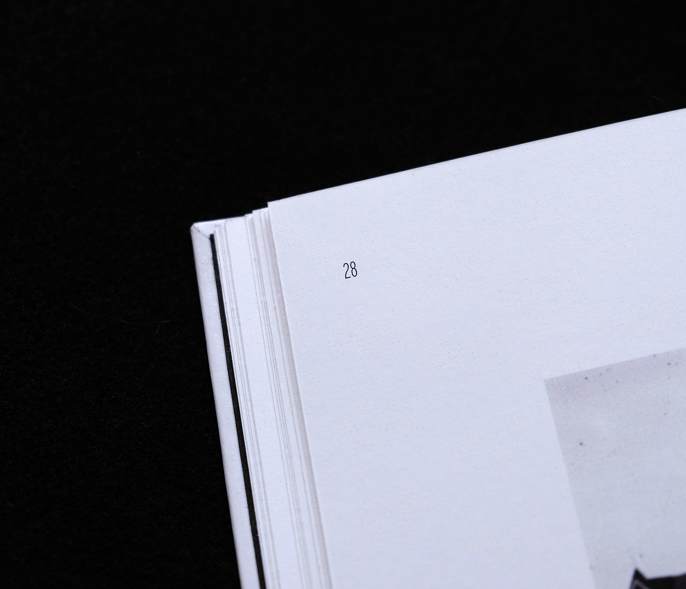
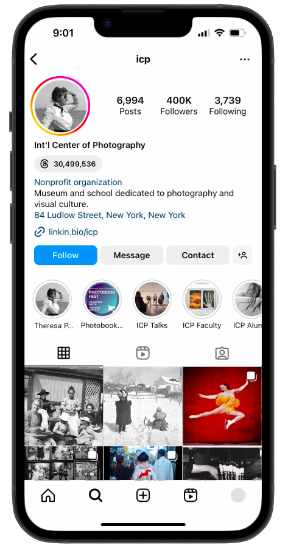
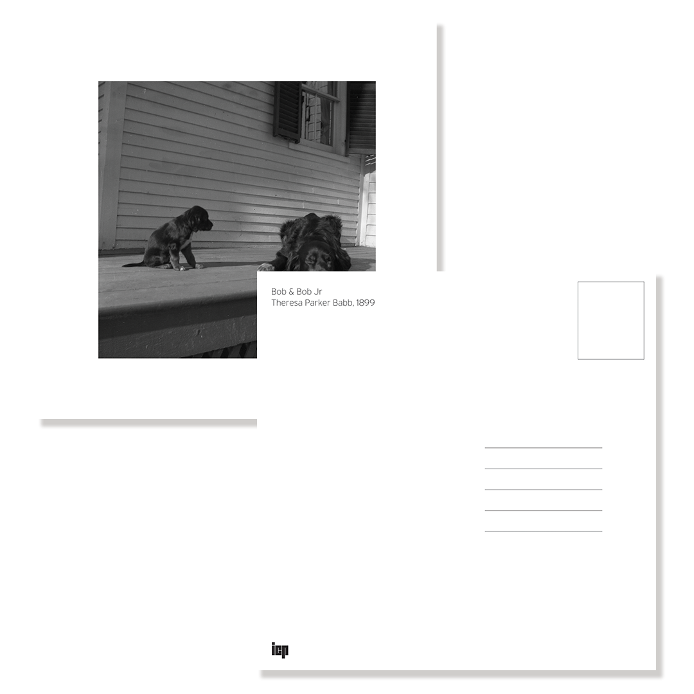
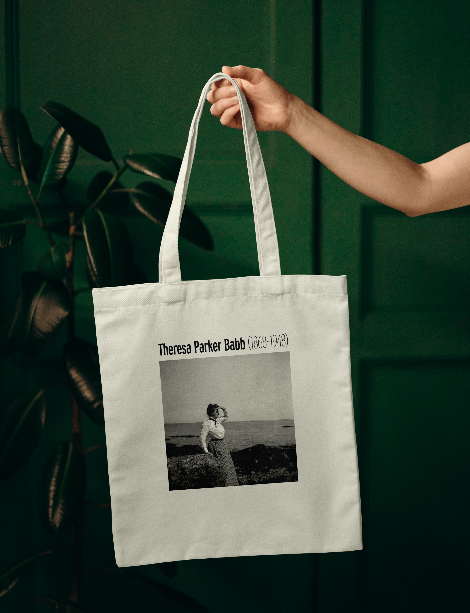
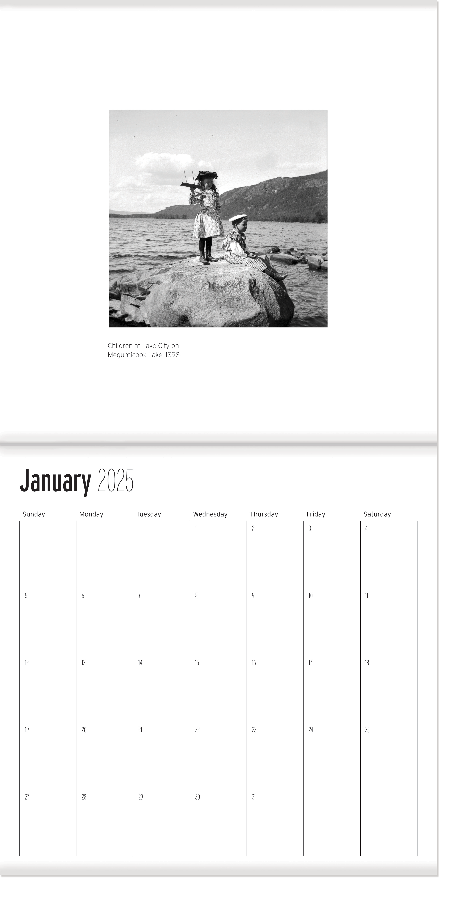

Theresa Parker Babb
December 2024
Typography, Book Binding, Branding
For my final project in an editorial design class, I created a catalog and additional brand applications for an exhibition on the work of Theresa Parker Babb, a relatively unknown photographer of the late 19th century.
After finding her work in a database of public domain images, I was struck by how contemporary so many of her photos felt despite having been taken a mere 60 years after the invention of the format. Her portraits of her female friends and family members were of particular interest to me because they provide a glimpse into a world that was not often documented during this time period.
After finding her work in a database of public domain images, I was struck by how contemporary so many of her photos felt despite having been taken a mere 60 years after the invention of the format. Her portraits of her female friends and family members were of particular interest to me because they provide a glimpse into a world that was not often documented during this time period.
To introduce and elevate Theresa's work to the status it deserves, I formatted the catalog as a formal photography book. Each page includes large areas of white space to focus attention on the images and emphasize the square aspect ratio most of her work shares.
Text is set in Interstate by Tobias Frere-Jones which provides a wide range of widths and weights while maintaining a sleek and authoritative tone.

The logo and visual system were extended to a series of applications including environmental graphics, merchandise, and the hypothetical host institution's webpage.



